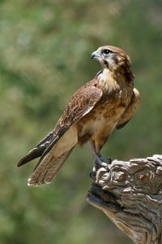
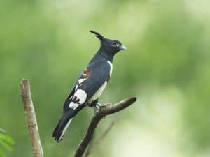
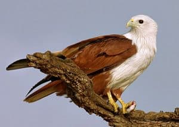
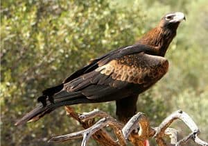
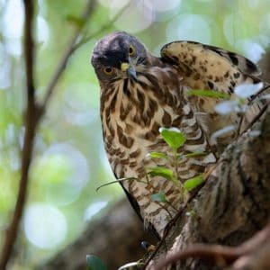
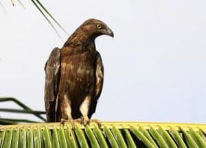

"Unleash the adventurer in you - explore the breathtaking world of birds in Bangladesh."
Besra

Long grey tail and short wings. Size: 29-36 cm
Black baza

Pretty small bird with black upperparts and white-chestnut steaked underparts. Size: about 35 cm, wingspan about 85 cm
Brahminy Kite

Prominent white head and breast and a rounded tail. Size: 43-51 cm, wingspan: 110-125 cm.
Changeable Hawk-Eagle

Large bird of prey with generally brown plumage. Size: about 70 cm
Crested Goshawk

Medium sized bird of prey with dark grey-brown upperparts and whitish-brown barred underparts. Size: 30-46 cm
Crested Honey Buzzard

Medium sized slender bird of prey with brown plumage. Size: 46-58 cm